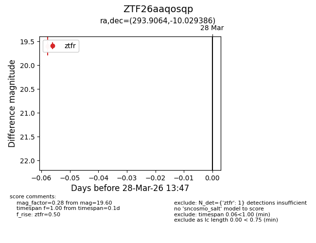
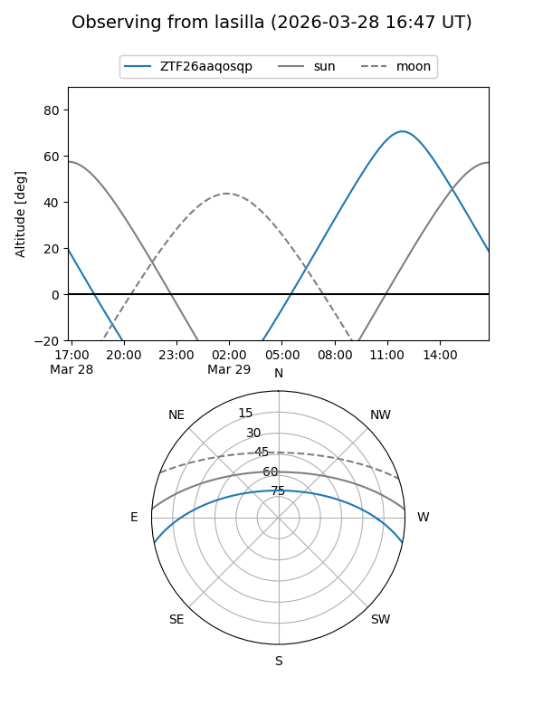
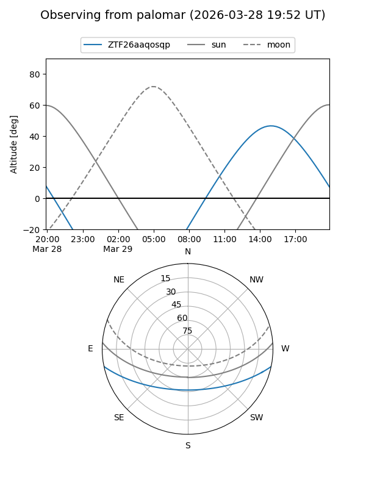

ZTF26aaqosqp
Target ZTF26aaqosqp at 2026-03-28 13:50
Aliases and brokers:
FINK: link
Lasair: link
ALeRCE: link
alt names
ZTF26aaqosqp (ztf,fink_ztf)
Coordinates:
equatorial (ra, dec) = 293.9064,-10.02939
equatorial (HMS+DMS) = 19:35:37.54,-10:01:45.79
galactic (l, b) = (28.8508,-14.32006)
Flags:
Photometry:
last ztfr=19.60
1 ztfr detections
Lightcurve

Visibility


Additional plots